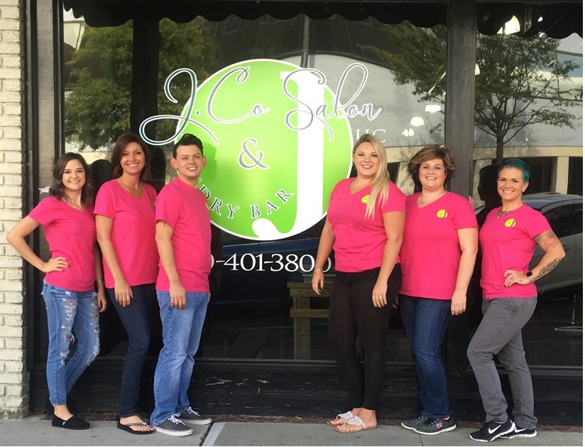

J. Co Salon & Blo'Dry Bar
J. Co Salon & Blo'Dry BarCome see us at J. Co Salon & Blo'Dry Bar!

At J. Co Salon & Blo'Dry Bar, we strive to change our guests outlook on life, one cut,
color, style, or nail service at a time. Great pride is put into providing exceptional guest experiences using the most
current techniques at reasonable prices. When you look and feel good, we look and feel good too!
Just as importantly as what goes on in these four walls, we also look forward to reaching out into the Fayetteville &
Fort Bragg communities to support events and programs. We want to personally thank you for being a part of the J. Co
Salson & Blo'Dry Family.
Peace, Love & Hairspray,
Joshua & Adam Gray-Heim
417 Hay St. Suite B
Fayetteville, NC 28301
(910)401-3800
Hours: Tuesday & Wednesday 9am to 6pm
Thursday & Friday 9am to 8pm
Saturday 8:30am to 4pm
Closed Sunday & Monday